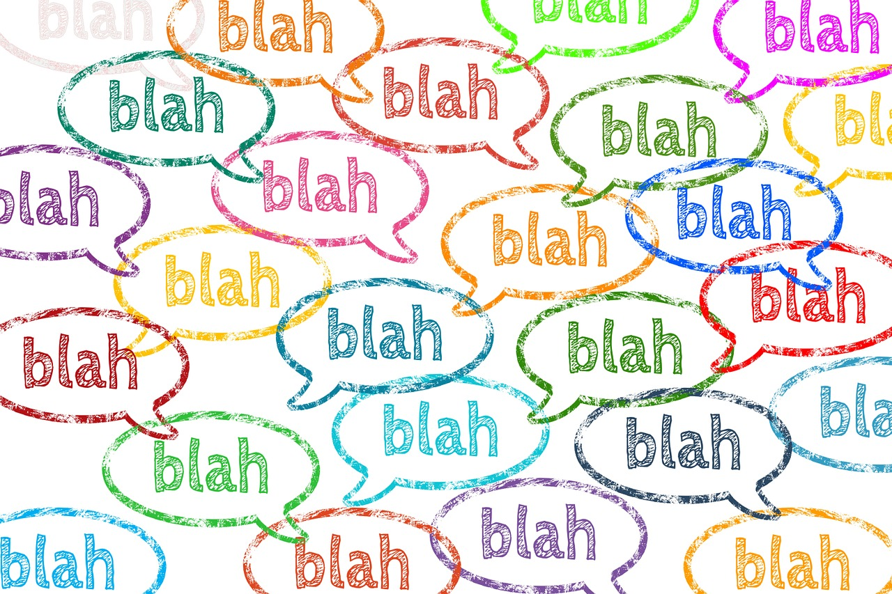

Structured Programming vs. Object Oriented Programming
by Rafael García Cabrera

Rafael García Cabrera
by Rafael García Cabrera
Programming paradigms are a way to classify programming languages based on their features.
A programming paradigm is a fundamental style of computer programming.
Programming paradigms differ in how each element of the programs is represented and how steps are defined for solving problems.
Some paradigms are concerned mainly with implications for the execution model of the language, such as allowing side effects, or whether the sequence of operations is defined by the execution model.
Other paradigms are concerned mainly with the way that code is organized, such as grouping a code into units along with the state that is modified by the code.
Yet others are concerned mainly with the style of syntax and grammar.
A programming language is a formal language, which comprises a set of instructions used to produce various kinds of output. Programming languages are used in computer programming to create programs that implement specific algorithms.

Many of the most widely used programming languages (such as Java, Python, C++, PHP, JavaScript etc.) are multiparadigm programming languages that support object-oriented programming to a greater or lesser degree, typically in combination with imperative, procedural programming.
As the name suggests, OOP focuses on representing problems using real-world objects and their behavior,
while Structured Programming deals with organizing the program in a logical structure.
The structured program theorem, also called Böhm-Jacopini theorem, is a result in programming language theory. It states that a class of control flow graphs (historically called charts in this context) can compute any computable function if it combines subprograms in only three specific ways (control structures).
The theorem states that it is possible to write any computer program by using only three basic control structures:
In computer science, control flow is the order in which individual statements, instructions or function calls of an imperative program are executed or evaluated. The emphasis on explicit control flow distinguishes an imperative programming language from a declarative programming language.

In computer science, conditional statements, conditional expressions and conditional constructs are features of a programming language, which perform different computations or actions depending on whether a programmer-specified boolean condition evaluates to true or false. Apart from the case of branch predication, this is always achieved by selectively altering the control flow based on some condition.

In most computer programming languages, a while loop is a control flow statement that allows code to be executed repeatedly based on a given Boolean condition. The while loop can be thought of as a repeating if statement.

In most computer programming languages, a do while loop is a control flow statement that executes a block of code at least once, and then repeatedly executes the block, or not, depending on a given boolean condition at the end of the block.

In computer science, a for-loop is a control flow statement for specifying iteration, which allows code to be executed repeatedly.
A For loop has two parts: a header specifying the iteration, and a body which is executed once per iteration. The header often declares an explicit loop counter or loop variable, which allows the body to know which iteration is being executed. For-loops are typically used when the number of iterations is known before entering the loop. For-loops can be thought of as shorthands for while-loops which increment and test a loop variable.

For each (or foreach, sometimes called an iterative for-loop) is a control flow statement for traversing items in a collection. Foreach is usually used in place of a standard for statement. Unlike other for loop constructs, however, foreach loops usually maintain no explicit counter: they essentially say “do this to everything in this set”, rather than “do this x times”. This avoids potential off-by-one errors and makes code simpler to read. In object-oriented languages an iterator, even if implicit, is often used as the means of traversal.
It is assumed that the birth year of Structured Programming is 1970. Structured programming is considered a subset of imperative programming.
Imperative programming is a programming paradigm that uses statements that change a program’s state. In much the same way that the imperative mood in natural languages expresses commands, an imperative program consists of commands for the computer to perform. Imperative programming focuses on describing how a program operates.
Structured programming is a programming paradigm aimed at improving the clarity, quality, and development time of a computer program by making extensive use of the structured control flow constructs of selection (if/then/else) and repetition (while and for), block structures, and subroutines.
In OOP, the focus is on thinking about the problem to be solved in terms of real-world elements and representing the problem in terms of objects and their behavior.
Classes depict the abstract representations of real world objects. Classes are like blueprints or templates, which gather similar items or things that can be grouped together. Classes have properties called attributes or fields. Attributes are implemented as global and instance variables.
Methods in the classes represent or define the behavior of these classes. Methods and attributes of classes are called the members of the class. An instance of a class is called an object. Therefore, an object is a data structure that closely resembles some real-world object.
There are several important OOP concepts such as Data abstraction, Encapsulation, Polymorphism, Messaging, Modularity and Inheritance.
Typically, encapsulation is achieved by making the attributes private, while creating public methods that can be used to access those attributes.
Inheritance allows the user to extend classes (called sub classes) from other classes (called super classes).
Polymorphism allows the programmer to substitute an object of a class in place of an object of its super class.
Typically, the nouns found in the problem definition directly become classes in the program. And similarly, verbs become methods. Some of the most popular OOP languages are Java and C#.
The focus of Structured Programming is to structure the program in to a hierarchy of subprograms while, the focus of OOP is to break down the programming task in to objects, which encapsulate data and methods.
OOP is considered more flexible than structured programming, because OOP separates a program in to a network of subsystems rather than structuring the program in to a hierarchy. Even though structuring provides certain clarity, a small change to a very large structured program may cause a ripple effect of having to change multiple subprograms.
Structured Programming is designed which focuses on process/ logical structure and then data required for that process.
Object Oriented Programming is designed which focuses on data.
Structured programming follows top-down approach.
Object oriented programming follows bottom-up approach.
Structured Programming is also known as Modular Programming and a subset of procedural programming language.
Object Oriented Programming supports inheritance, encapsulation, abstraction, polymorphism, etc.
In Structured Programming: Programs are divided into small self contained functions.
In Object Oriented Programming: Programs are divided into small entities called objects.
Structured Programming is less secure as there is no way of data hiding.
Object Oriented Programming is more secure as having data hiding feature.
Structured Programming can solve moderately complex programs.
Object Oriented Programming can solve any complex programs.
Structured Programming provides less reusability, more function dependency.
Object Oriented Programming provides more reusability, less function dependency.
Structured Programming: Less abstraction and less flexibility.
Object Oriented Programming: More abstraction and more flexibility.

Follow top-down approach to program design
Structured Programming Language
Follow bottom-up approach in program design
Object Oriented Programming Language
Data and Functions don’t tide with each other
Structured Programming Language
Data is hidden and can’t be accessed by the external world
Object Oriented Programming Language
Large programs are divided into smaller self contained program segment known as functions
Structured Programming Language
Functions are not dependent so reusability is possible
Object Oriented Programming Language
A program is decomposed into a hierarchy of processes
Structured Programming Language
It splits the program into objects that can be reused into other programs
Object Oriented Programming Language
It is less secure as there is no way of data hiding
Structured Programming Language
It can solve any complex programs
Object Oriented Programming Language
Slides generated from Slide Show (S9):